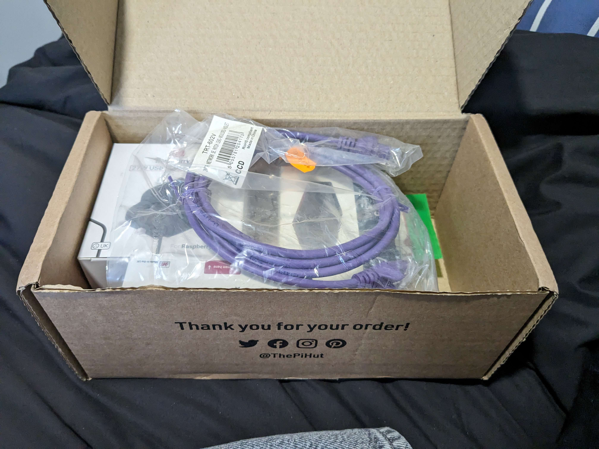
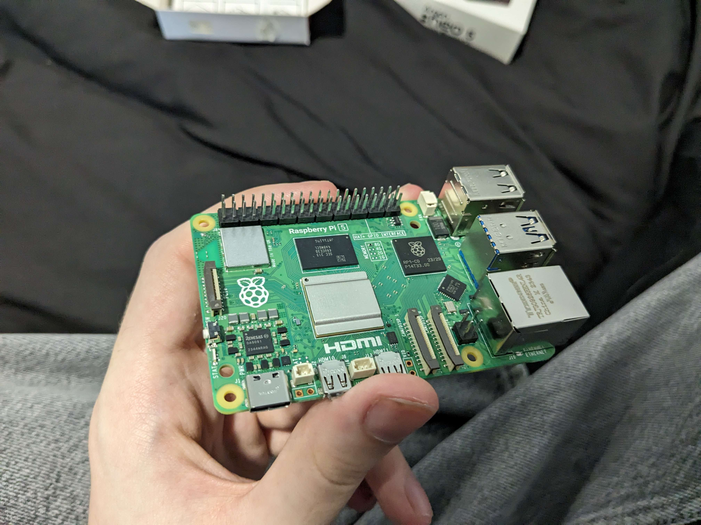
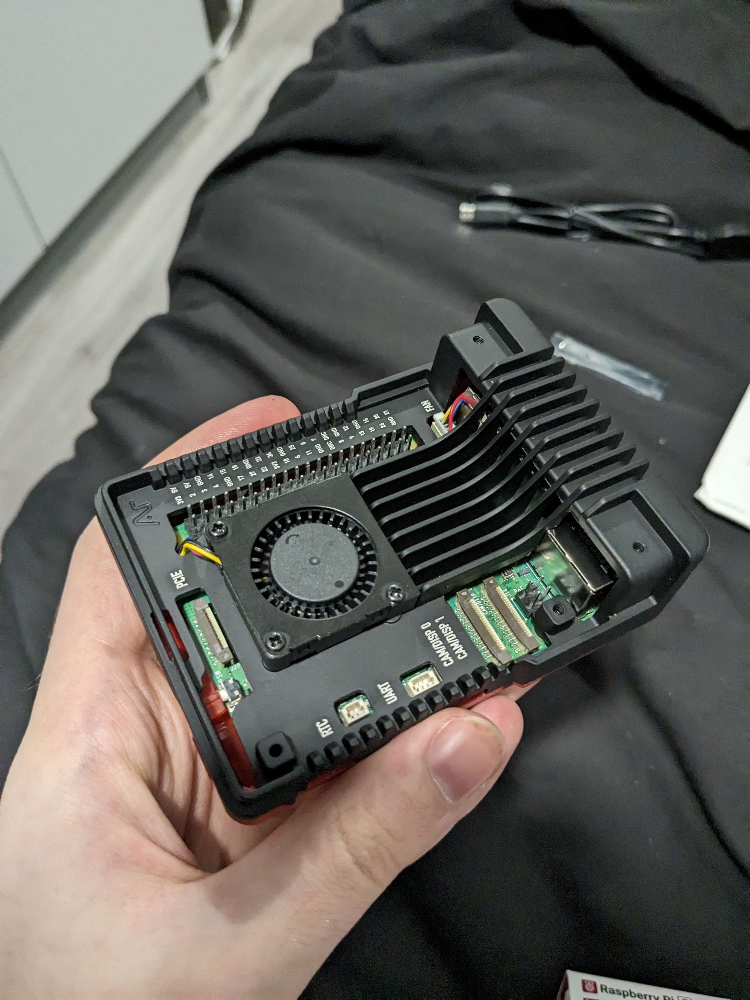
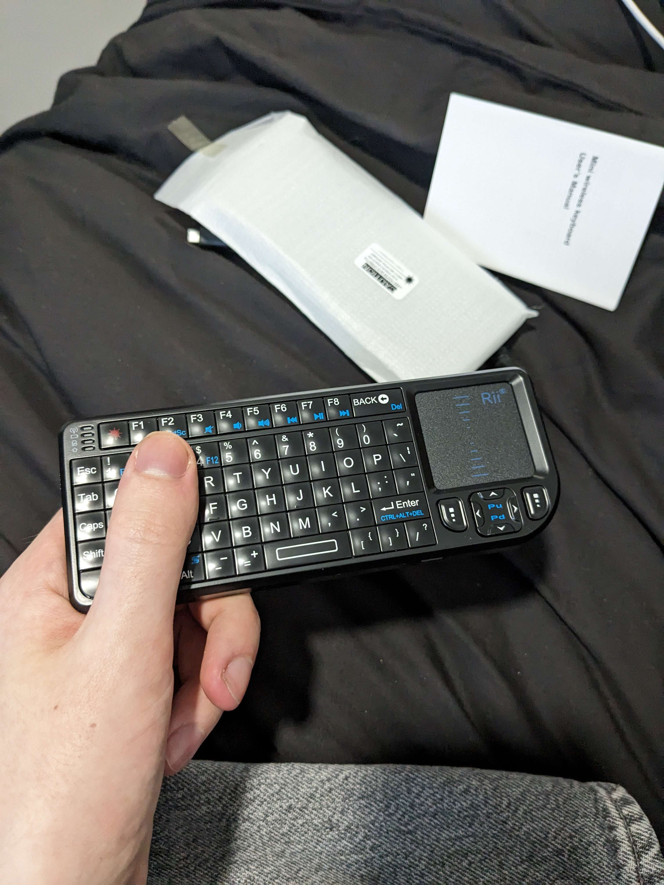
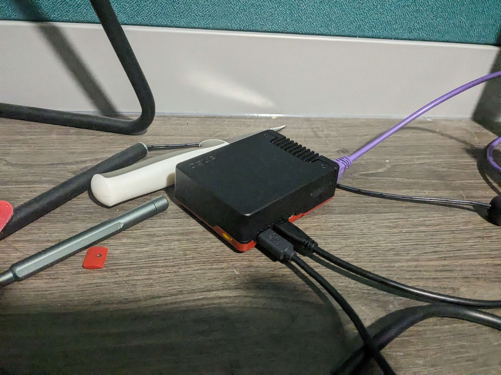

<return
:::::::::: :::::::::
:+: :+: :+:
+:+ +:+ +:+
:#::+::# +#++:++#:
+#+ +#+ +#+
#+# #+# #+#
### ### ###
::::::::: ::::::::
:+: :+: :+: :+:
+:+ +:+ +:+
+#+ +:+ :#:
+#+ +#+ +#+ +#+#
#+# #+# #+# #+#
######### ########
[03] Legally streaming is overrated
11th Mar 2024
Pre-arrival
Date of writing: 20/02/24
I LOVE tiny computers. They're cute, small, cute, uhh... interesting...... cool...................
I don't even fully understand why I like them. I guess it's because fitting everything into a small
form factor is so fascinating? Regardless, I often have to fight the repulsive urge to buy a small
computer every time I think about one.
Today, I have let my repulsion take the wheel and I've bought the Raspberry Pi 5.
In fact, I've bought a couple of things. First is the 8GB Pi 5, and to accompany it I went for
the Argon Neo 5 case because its combination of red and black is very cool and retro, even somewhat
reminiscent of Lenovo's colour scheming with their laptops and PC cases. It comes with an active
PWM fan cooler and a passive aluminium heatsink for quiet functionality (though I do personally
love hearing these tiny machines).
For peripherals, I decided to get an all-in-one with the Rii.. uh... something or another. No idea
what the actual product name is because they don't make it at all easy to identify even through
the official website, but it's a miniature USB/wireless keyboard with a touchpad to act as a mouse.
I bought this because I'm planning on making this Pi into a device for watching TV and streaming
video, and a wireless remote-sized peripheral device seems like the obvious choice for this.
As for storage, I went with a simple 32GB SD card. I know that M.2 SSDs are now feasible thanks
to the new header on the Pi 5s, but SDs are cheaper and my only spare M.2 has an incorrect
connector thingy I believe..?
I also bought a purple Ethernet cable cus it looked cool.
You may be wondering how a University boy can afford such things. If you're also not my mother,
then I advise you worry about YOURSELF. Otherwise, hi mum! Your mum sent me £60 and your sister
sent me £60 both for my birthday. This is how I'm spending it, I hope you still love me.
Usage and performance
Date of writing: 11/03/24

Whoops, looks like I accidentally put off writing this for almost a month. I've been using the Pi for
a few weeks now, and it's been great! I've been using it to stream video with the help of my friend
Devon's old monitor (and by old, I mean OLD. I had to buy a DVI-D to micro HDMI adapter to use it and
the display is unbareable unless you're directly facing it). Other than that, It's been super nice having
another screen to watch things on while I work on uni work from my bed.
The monitor also doesn't have speakers so I'm using an Echo Dot as a good value speaker.


The Pi 5 is a highly capable device, and while there was some buffering at first, I've since overclocked
the device to 3.9GHz and it's been running smoothly, although hot, ever since. The case can handle the heat
just fine, temperatures don't exceed 65°C thanks to its dual-passive-active cooling functionality.
The device is running Ubuntu 22.04 LTS, and I'm using Firefox to stream video and music. While one might argue
that the Pi 5 is overkill for a streaming device and that I should just get a Chromecast, I'd agree! But the Pi
is cooler and more fun to use, and it can be repurposed very easily. Plus, a web browser allows me to use more
legally-grey websites such as uflix.to (which I can't recommend more;
there's nothing it doesn't have, it's all under one roof and it's free!). I've been using it to watch House.

The keyboard I bought with it is pretty cool and definitely handy to use as a remote! The quality of the build is very nice too.
My one problem is more of a problem with me, and it's that my sweaty hands prevent me from using the touchpad properly.
Overall, I'm very happy with everything. Even if my mum doesn't love me afterwards :)
